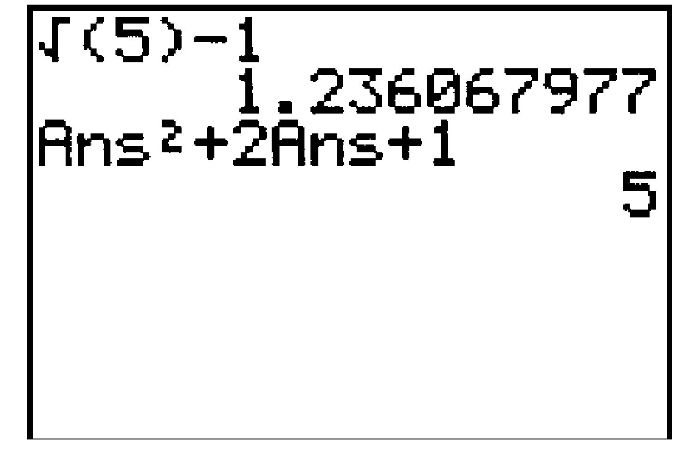

Section B.3 Editing Expressions
¶Subsection B.3.1 Overwriting
We can edit an expression without starting again. If we place the cursor over a symbol and press a new key, the new symbol replaces (overwrites) the old one.
Example B.3.1.
Correct the error in the following keystrokes for \(120 - 36\text{:}\)
The calculator gives an error message (See Figure B.2.18.) Select "2:Goto", and a blinking cursor appears over the error. Press - to replace the negative symbol by the subtraction symbol.
Subsection B.3.2 Recalling an Entry
We can recall a previous entry by pressing 2nd ENTER.
Example B.3.2.
Evaluate \(\sqrt{3}+\sqrt{2}~~ \) and \(~~\sqrt{3}-\sqrt{2} \text{.}\) First evaluate \(\sqrt{3}+\sqrt{2} \text{:}\)
2nd \(\boxed{x^2} ~ 3\,\) ) + 2nd \(\boxed{x^2} ~2\,\) ENTER
Ans. \(3.14626437\)
Now press 2nd ENTER to recall the last entry, and use the left arrow key \(\boxed{\leftarrow}\) to position the cursor over \(+\text{.}\) Press - to change to \({}-{}\text{,}\) then press ENTER. Your screen should look like Figure B.3.3.
Subsection B.3.3 Inserting a Character
To insert a new character before a symbol, position the cursor over that symbol and press 2nd DEL to get the INS (insert) command.
Example B.3.4.
Evaluate \(\sqrt{3}-5\sqrt{2} \) by editing the example above.
Press 2nd ENTER to recall the last entry, and use the left arrow key \(\boxed{\leftarrow}\) to position the cursor over the second \(\sqrt{\,}\) from left to right. Press 2nd DEL \(5\) to insert 5 before the \(\sqrt{\,}\) symbol, then press ENTER. Your screen should look like Figure B.3.5.
Subsection B.3.4 Recalling an Answer
We often want to use the result from a previous calculation in a new calculation, without having to type in the number. We use the ANS key, 2nd (-), to recall the answer to the last calculation.
Example B.3.6.
-
Evaluate \(\sqrt{5}-1 \)
2nd\(\boxed{x^2} ~ 5\,\))-\(1 \,\)ENTERAns. \(1.236067977\)
-
Evaluate \(x^2 + 2x + 1\) for \(x = \sqrt{5}-1 \text{.}\) Because \(x\) is the last answer the calculator computed, we enter
2nd(-)\(\boxed{x^2}\,\)+\(2\,\)2nd(-)+\(1 \,\)ENTERAns. \(5\)
Your screen should look like Figure B.3.7.
Figure B.3.7.